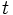
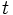

![[Main Page]](../../rsrc/bci2000logo.svg)
Implementing a Signal Processing Filter
Programming Tutorial
This tutorial shows you how to derive a new filter class from GenericFilter, how to check preconditions, initialize your filter, and process data. It will also show you how to visualize the output signal of the filter and present it to the operator user.
A simple low pass filter
We want to implement a low pass filter with a time constant  (given
in units
of a sample's duration), a sequence as input and a sequence
(given
in units
of a sample's duration), a sequence as input and a sequence
 as output (where  is a sample index proportional to
time), and obeying
as output (where  is a sample index proportional to
time), and obeying

The filter skeleton
The resulting filter class is to be called LPFilter. We create two new files, LPFilter.h, and LPFilter.cpp, and put a minimal filter declaration into LPFilter.h:
#ifndef LP_FILTER_H
#define LP_FILTER_H
#include "GenericFilter.h"
class LPFilter : public GenericFilter
{
public:
LPFilter();
~LPFilter();
void Preflight( const SignalProperties&, SignalProperties& ) const override;
void Initialize( const SignalProperties&, const SignalProperties& ) override;
void Process( const GenericSignal&, GenericSignal& ) override;
};
#endif // LP_FILTER_H
Into LPFilter.cpp we put the lines
#include "LPFilter.h" #include "MeasurementUnits.h" #include "BCIError.h" #include <vector> #include <cmath>
The Process function
When implementing a filter, a good strategy is to begin with the Process function, and to consider the remaining class member functions mere helpers, mainly determined by the code of Process. So we convert the filter prescription into the Process code, introducing member variables ad hoc, ignoring possible error conditions, and postponing efficiency considerations:
void LPFilter::Process( const GenericSignal& Input, GenericSignal& Output )
{
// This implements the prescription's second line for all channels:
for( int channel = 0; channel < Input.Channels(); ++channel )
{
for( int sample = 0; sample < Input.Elements(); ++sample )
{
mPreviousOutput[ channel ] *= mDecayFactor;
mPreviousOutput[ channel ] +=
Input( channel, sample ) * ( 1.0 - mDecayFactor );
Output( channel, sample ) = mPreviousOutput[ channel ];
}
}
}
The Initialize member function
As you will notice when comparing Process to the equations above, we introduced member variables representing these sub-expressions:
We introduce these members into the class declaration, adding the following lines after the Process declaration:
private:
double mDecayFactor;
std::vector<double> mPreviousOutput;
The next step is to initialize these member variables, introducing filter parameters as needed. This is done in the Initialize member function -- we write it down without considering possible error conditions:
void LPFilter::Initialize( const SignalProperties& Input,
const SignalProperties& Output )
{
// This will initialize all elements with 0,
// implementing the first line of the filter prescription:
mPreviousOutput.clear();
mPreviousOutput.resize( Input.Channels(), 0 );
double timeConstant = Parameter( "LPTimeConstant" );
mDecayFactor = ::exp( -1.0 / timeConstant );
}
Now this version is quite inconvenient for a user going to configure our filter -- the time constant is given in units of a sample's duration, resulting in a need to re-configure each time the sampling rate is changed. A better idea is to let the user choose whether to give the time constant in seconds or in sample blocks. To achieve this, there is a utility class MeasurementUnits that has a member ReadAsTime(), returning values in units of sample blocks which is the natural time unit in a BCI2000 system. Writing a number followed by an "s" will allow the user to specify a time value in seconds; writing a number without the "s" will be interpreted as sample blocks. Thus, our user friendly version of Initialize reads
void LPFilter::Initialize( const SignalProperties&, const SignalProperties& )
{
mPreviousOutput.clear();
mPreviousOutput.resize( Input.Channels(), 0 );
// Get the time constant in units of a sample block's duration:
double timeConstant = MeasurementUnits::ReadAsTime( Parameter( "LPTimeConstant" ) );
// Convert it into units of a sample's duration:
timeConstant *= Parameter( "SampleBlockSize" );
mDecayFactor = ::exp( -1.0 / timeConstant );
}
The Preflight function
Up to now, we have not considered any error conditions that might occur during execution of our filter code. Scanning through the Process and Initialize code, we identify a number of implicit assumptions:
- The time constant is not zero -- otherwise, a division by zero will occur.
- The time constant is not negative -- otherwise, the output signal is no longer guaranteed to be finite, and a numeric overflow may occur.
- The output signal is assumed to hold at least as much data as the input signal contains.
The first two assumptions may be violated if a user enters an illegal value into the LPTimeConstant parameter; we need to make sure that an error is reported, and no code is executed that depends on these two assumptions. For the last assumption, we request an appropriate output signal from the Preflight function. Thus, the Preflight code reads
void LPFilter::Preflight( const SignalProperties& Input,
SignalProperties& Output ) const
{
double LPTimeConstant = MeasurementUnits::ReadAsTime( Parameter( "LPTimeConstant" ) );
LPTimeConstant *= Parameter( "SampleBlockSize" );
// The PreflightCondition macro will automatically generate an error
// message if its argument evaluates to false.
// However, we need to make sure that its argument is user-readable
// -- this is why we chose a variable name that matches the parameter
// name.
PreflightCondition( LPTimeConstant > 0 );
// Alternatively, we might write:
if( LPTimeConstant <= 0 )
bcierr << "The LPTimeConstant parameter must be greater 0";
// Request output signal properties:
Output = Input;
}
Constructor and destructor
Because we do not explicitly acquire resources, nor perform asynchronous operations, there is nothing to be done inside the LPFilter destructor . Our constructor will contain initializers for the members we declared, and a BCI2000 parameter definition for LPTimeConstant. Specifying the empty string for both low and high range tells the framework not to perform an automatic range check on that parameter.
LPFilter::LPFilter()
: mDecayFactor( 0 ),
mPreviousOutput( 0 )
{
BEGIN_PARAMETER_DEFINITIONS
"Filtering float LPTimeConstant= 16s"
" 16s % % // time constant for the low pass filter in blocks or seconds",
END_PARAMETER_DEFINITIONS
}
LPFilter::~LPFilter()
{
}
Filter instantiation
To have our filter instantiated in a signal processing module, we add a line containing a Filter statement to the module's PipeDefinition.cpp. This statement expects a string parameter which is used to determine the filter's position in the filter chain. If we want to use the filter in the AR Signal Processing module, and place it after the SpatialFilter, we add
#include "LPFilter.h" ... Filter( LPFilter, 2.B1 );
to the file SignalProcessing/AR/PipeDefinition.cpp. Now, if we compile and link the AR Signal Processing module, we get an "unresolved external" linker error that reminds us to add our LPFilter.cpp to that module's project.
Visualizing filter output
Once our filter has been added to the filter chain, the BCI2000 framework will automatically create a parameter VisualizeLPFilter that is accessible under Visualize->Processing Stages in the operator module's configuration dialog. This parameter allows the user to view the LPfilter's output signal in a visualization window. In most cases, this visualization approach is sufficient. For the sake of this tutorial, however, we will disable automatic visualization, and implement our own signal visualization.
To disable automatic visualization, we override the GenericFilter::AllowsVisualization() member function to return false. In addition, to present the LPFilter's output signal in an operator window, we introduce a member of type GenericVisualization into our filter class, adding
#include "GenericVisualization.h"
...
class LPFilter : public GenericFilter
{
public:
...
bool AllowsVisualization() const override { return false; }
private:
...
GenericVisualization mSignalVis;
};
...
GenericVisualization's constructor takes a string-valued visualization ID as a parameter; we need to get a unique ID in order to get our data routed to the correct operator window. Given the circumstances, a string consisting of the letters "LPFLT" appears unique enough, so we change the LPFilter constructor to read
LPFilter::LPFilter()
: mDecayFactor( 0 ),
mPreviousOutput( 0 ),
mSignalVis( "LPFLT" )
{
BEGIN_PARAMETER_DEFINITIONS
"Filtering float LPTimeConstant= 16s"
" 16s % % // time constant for the low pass filter in blocks or seconds",
"Visualize int VisualizeLowPass= 1"
" 1 0 1 // visualize low pass output signal (0=no, 1=yes)",
END_PARAMETER_DEFINITIONS
}
In Initialize, we add
mSignalVis.Send( CfgID::WindowTitle, "Low Pass" ); mSignalVis.Send( CfgID::GraphType, CfgID::Polyline ); mSignalVis.Send( CfgID::NumSamples, 2 * Parameter( "SamplingRate" ) );
Finally, to update the display in regular intervals, we add the following at the end of Process:
if( Parameter( "VisualizeLowPass" ) == 1 )
mSignalVis.Send( Output );
We might also send data to the already existing task log memo window, adding another member
GenericVisualization mTaskLogVis;
initializing it with
LPFilter::LPFilter()
: ...
mTaskLogVis( SourceID::TaskLog )
{
...
}
and, from inside Process, writing some text to it as in
if( output( 0, 0 ) > 10 )
{
mTaskLogVis << "LPFilter: (0,0) entry of output exceeds 10 and is "
<< output( 0, 0 )
<< std::endl;
}